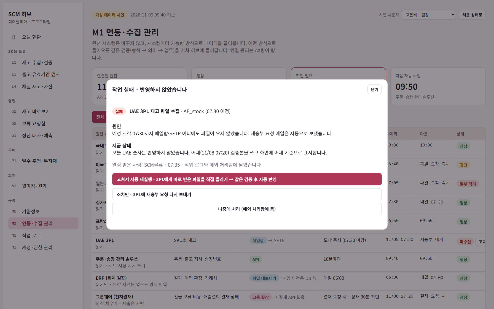
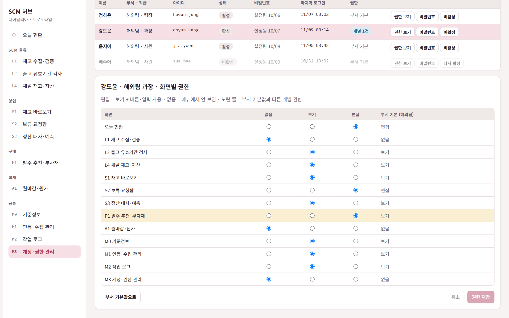

바람인터내셔날 AX · PM 트랙 과제
디어달리아 SCM 허브 + 부서별 자동화 도구 기획서
지원자 신동혁 (Shin Donghyeok) · 2026년 11월
임의 데이터로 구현한 프로토타입 포함
01 · 결론
① SCM 허브
국내외 재고를 매일 수집·검증해 실물·가용·회사 자산 재고를 같은 기준으로 계산합니다. 보류 요청과 업무 기준(입고규정·MOQ·리드타임)도 여기서 관리합니다.
② 부서별 자동화 도구 14종
엑셀 변환·대조·양식 작성을 HTML 도구와 크롬 확장으로 자동화합니다. 데이터 규격을 맞춰 두고 이후 허브 기능으로 통합합니다.
③ 단계적 확장
1단계 재고 조회·보류·기준정보 → 2단계 출고 검사·수불부 → 3단계 발주 추천·정산 대사. 각 단계는 효과가 확인되면 넘어갑니다.
1단계 기대 효과
재고 문의 → 직접 조회
보류 반영 며칠 → 당일 마감 배치
재고 차이 실사 때 발견 → 매일 발견
수치 목표는 0단계(2주)에 현재 소요 시간을 측정한 뒤 확정합니다 · 2
목차
본문 28쪽, 부록(운영 매뉴얼) 8쪽으로 구성했습니다.
01
결론
한 장 요약
2쪽
02
현황과 문제
회사 특성 · 지금 흐름 · 원인 3개 · 우선순위
4–7쪽
03
해결 구조
SCM 허브 · 연동·수집 · 작업 로그 · 계정·권한
8–12쪽
04
부서별 도구
형태 선택 · 도구 14종
13–14쪽
05
핵심 로직
재고 숫자 · 보류 · 유효기간 · 예측·발주 연결
15–18쪽
06
실행 경험과 프로토타입
직접 만든 사내 시스템 · 가상 데이터로 직접 사용
19–22쪽
07
실행 계획
로드맵 · 공수 · 운영 · KPI · 리스크 · AI · 가정
23–29쪽
부록
운영 매뉴얼
역할표 · 운영 리듬 · 역할별 하루
30–37쪽
02 · 회사 이해
비건 색조 중심, 컬러가 많은 립 라인
SKU가 많고 컬러별 수요 편차가 큽니다. 컬러마다 단상자·라벨이 달라 부자재 종류도 늘어납니다(가정).
9주년 특가 같은 기간 한정 행사
행사 물량 보류 요청이 한꺼번에 몰려 보류 처리 속도가 매출에 바로 영향을 줍니다.
해외 하이엔드 백화점 + 국내 H&B·온라인
채널마다 입고규정·재고 소유권·정산 방식이 달라 기준정보를 따로 관리해야 합니다.
42개국 2,600개 매장, 2026년 CB 투자 유치
해외 확장에 따라 국가별 3PL이 늘고 있어 수작업 취합으로는 대응이 어렵습니다.
출처: deardahlia.kr, 한국경제 2026.07.12(하이트진로 CB 투자), 과제 자료 · 4
02 · 현재 업무 흐름
1 수요예측
영업·해외·BM
2 취합
구매
3 발주
구매·OEM
4 입고
물류·3PL
5 보류·할당
영업→물류
6 출고
물류·3PL
7 수불부·마감
물류·영업·회계
팀별 엑셀
정확도 미측정
손으로 합산
발주가 먼저 나가기도
MOQ·LT 경험 의존
부자재 병목
해외 로트 정보 없음
오류 검증 없음
반영 며칠
건별이면 야간 작업비
채널 규정을 기억으로 확인
대형 엑셀 수기 입력
근거 따로 수집
모든 단계의 출발점은 담당자 1명이 매일 아침 국내외 3PL 데이터를 수작업으로 모은 재고 파일이며 이 파일의 오류가 예측·발주·출고·마감까지 이어집니다.
분홍색 = 숫자가 갈라지는 단계(원천이 바뀌거나 사람이 옮겨 적는 곳) · 5
02 · 문제 정의
[영업] 가용재고를 물류에 물어봄
[공통] 부서마다 재고 숫자가 다름
[물류] 해외 데이터 오류를 못 거름
[물류] 채널 재고는 기말에만 확인
[물류] 채널 입고규정을 기억으로 출고
[구매] MOQ·리드타임이 경험 의존
[공통] 인수인계·감사 때 근거 재수집
[물류] 보류 처리 기준이 없음
[구매] 예측 취합, OEM 정산 대사
[영업] 채널 정산서 대사·신고 자료
[물류] 로트별 수불부 수기 입력
[회계] 근거 수집, 원가 재요청
→ 허브의 재고 원장
→ 기준정보 마스터
→ 부서별 자동화 도구
[ ] = 문제를 겪는 부서 · 6
02 · 우선순위
효과
큼
효과
작음
1단계 · 바로 착수
국내 재고 조회 · 보류 요청함
재고 수집·검증 · 기준정보 마스터
2~3단계 · 기반 위에 확장
출고 유효기간 검사 · 수불부 · 채널 재고
발주 추천 · 부자재 소요 · 정산 대사
틈틈이 · 빠른 개선
예측 제출 양식 · 원가 미확정 알림
전자결재 입력 도우미
하지 않음 · 조건 바뀌면 재검토
해외 로트 추정(원천 없음) · ERP 쓰기 연동(비용)
자동 발주 확정(구매 책임) · FEFO 엔진(3PL 역할)
← 쉬움 (파일로 데이터 확보, 다른 팀 의존 적음)
어려움 (협의·선행 기준 필요) →
가로축 = 실행 용이성, 세로축 = 업무 효과 · 7
03 · 해결 구조
원천 (지금 있는 것)
국내 3PL WMS 파일
해외 3PL 파일 (SKU 수량)
채널 정산서
OEM 청구서 · 예측 엑셀
수집·검증
형식 검사
코드 매핑
이상 변동
SCM 허브
재고 원장
기준정보 마스터
보류 원장
예외 처리함
부서 화면·도구
영업 4종
구매 3종
SCM 물류 4종
회계 3종
숫자마다 기준 시각과 원본 파일·행이 붙습니다. 숫자가 맞지 않으면 클릭해 출처를 확인합니다.
원천 시스템은 바꾸지 않습니다. 시스템마다 API · 파일 자동 수신 · 크롬 확장 중 가능한 방식으로 끌어옵니다.
3PL·채널 시스템은 바꾸지 않습니다 · 8
03 · 연동 방식
API 원천이 주는 조회·등록 창구 파일 자동 수신 SFTP·메일함·공유 폴더 감시 크롬 확장 웹 화면만 있을 때 로그인 상태로 대신 처리
| 원천 시스템 | 가져오는 데이터 | 1단계 연결 | 확장 단계 | 수집 방식 | 허브 → 원천 |
|---|---|---|---|---|---|
| 국내 3PL WMS | 로트별 재고·유효기간·보류 | 크롬 확장 | WMS API | 30분마다 + 지금 수집 | 보류 지시 쓰기 (11·16시) |
| 해외 3PL 5개국 | SKU별 재고 (국가별 양식) | SFTP 메일함 | 국가별 API | 도착 즉시 · 07:30 마감 | 읽기 |
| 주문·송장 관리 솔루션 | 주문·출고 지시·송장번호 | API | 그대로 | 10분마다 + 지금 수집 | 로트 지정 지시 쓰기 |
| ERP (회계 원장) | 원가·매입 확정·거래처 | 내보내기 파일 | 읽기 전용 DB 뷰 | 매일 06:00 | 읽기만 · 마감은 업로드 양식 |
| 그룹웨어 (전자결재) | 긴급 보류 비용·매출결의 결재 | 크롬 확장 | 결재 API·웹훅 | 결재 요청 시 · 상태 30분 | 양식 채우기 · 제출은 사람 |
| 채널 정산서 12곳 | 매입 확정·판매·재고 보고 | 포털 내려받기 메일함 | 대형 채널 EDI·API | 정산 주기별 도착 감지 | 읽기 |
| 공용 엑셀 | 재고·보류·예측·수불부 이력 | 공유 폴더 | 폐지 | 병행 기간 매일 | 1회 이관 후 폐지 |
1단계는 API 개발·ERP 비용 없이 시작하고 API가 확인되는 원천부터 바꿉니다 · 9
03 · 수집 방식
정기 자동 수집
n분마다
국내 WMS 30분 · 주문 10분 · 프랑스 API 60분. 주기는 원천별로 10·30·60분 중 고릅니다.
M1에서 주기 변경
도착 즉시 수집
파일이 오면 바로
SFTP·메일함·공유 폴더에 파일이 들어오면 그 자리에서 검증합니다. 07:30까지 안 오면 재송부 요청을 자동으로 보냅니다.
해외 3PL · 정산서 · ERP
지금 수집 버튼
누르면 1~2분 안에
출고 직전, 행사 물량 확인처럼 최신 숫자가 필요할 때 담당자가 누릅니다. 화면의 기준 시각이 바로 바뀝니다.
M1 · L1 · S1에서
배치 전송
하루 두 번 모아서
보류 지시는 11시·16시에 모아 3PL에 보냅니다. 긴급 건만 비용 승인 후 건별로 보냅니다.
S2 보류 마감
실패하면 3번 재시도
그래도 안 되면 예외 처리함에 담당자·기한을 붙여 넘깁니다.
직전 검증본 유지
틀린 숫자 대신 마지막으로 검증된 숫자를 쓰고 '어제 기준'처럼 표시합니다.
기준 시각 항상 표시
화면마다 데이터 기준 시각을 표시합니다.
주기와 마감 시각은 예시이며 원천 시스템의 호출 제한과 3PL 작업 시간에 맞춰 정합니다 · 10
03 · 작업 로그 · 실패 처리
① 작업 실행
자동 수집 · 지금 수집 · 보류 요청 · 3PL 전송 · 매핑 확정 등 모든 작업
▼
② 같은 검증
형식 → 의미 → 업무 검증 통과 시에만 반영
▼
성공 → 반영 + 기록
결과와 건수 기록
실패 → 반영 안 함 + 기록
작업 전체를 반영하지 않고 직전 상태 유지
▼
③ 작업한 사람에게 바로 알림
원인·현재 상태·조치 방법 안내. 자동 작업은 담당 부서에 알리고 예외 처리함에 등록
▼
④-1 고쳐서 자동 재실행
값·SKU를 고치거나 파일을 직접 올리면 같은 검증을 거쳐 자동 반영
④-2 수동 처리
사람이 직접 처리하고 확정. 수동 처리도 누가 했는지 기록

로그에 남는 항목 · 시각 · 작업자 계정 · 작업 · 대상 · 결과 · 원인 · 변경 전·후 값. 재고 숫자를 누르면 그 숫자를 바꾼 작업을 시간순으로 거꾸로 추적합니다
결과 종류 · 성공 · 부분 반영 · 실패 · 수정 후 반영 · 재시도 성공 · 수동 처리
판단 단위 · 파일 형식 오류나 전송 실패는 작업 전체를 반영하지 않습니다. 검증에 걸린 행만 있으면 그 행만 격리하고 나머지 행을 반영해 '부분 반영'으로 기록합니다
예: UAE 파일 미도착 → 어제 기준 유지·SCM물류에 알림 → 받은 파일 직접 올리기 → 검증 통과 후 자동 반영 · 11
03 · 계정 · 권한
계정: 부서별로 등록
· AX팀이 이름·부서·직급·아이디로 등록
· 등록 시 부서 기본 권한 자동 부여
· 퇴사·휴직은 비활성으로 막고 기록은 보존
비밀번호: 원문은 저장하지 않음
· 임시 비밀번호 발급 → 첫 로그인 때 본인이 변경
· 10자 이상 · 영문·숫자·특수문자 · 아이디 포함 금지
· 5회 오류 시 잠금, AX팀이 해제
권한: 화면마다 없음 · 보기 · 편집
· 없음 = 메뉴에서 숨김 · 보기 = 버튼·입력 잠금
· 사람마다 부서 기본과 다르게 조정 가능
· 관리자는 계정별 활동 화면에서 직원마다 성공·실패·권한 없는 시도를 확인

예 · 해외팀 강도윤 과장은 해외 예측 담당이라 P1 발주 추천만 부서 기본(보기)보다 높은 편집 권한을 받았습니다.
확장 단계에서는 그룹웨어 계정과 SSO로 연결해 아이디·비밀번호를 하나로 씁니다 · 12
04 · 도구 형태 선택 기준
엑셀을 넣고 결과 엑셀을 받는 일
설치·서버가 없고 데이터가 PC 밖으로 나가지 않습니다. 몇 주 안에 만들어 바로 씁니다.
예: 정산서 표준화기, 발주 추천기
웹 시스템 안에서 하는 일
3PL 전산·그룹웨어 화면에서 다운로드와 양식 입력을 대신합니다. 최종 제출 클릭은 사람이 합니다.
예: 재고 자동 수집기, 전자결재 도우미
여러 사람이 같은 상태를 봐야 하는 일
권한, 변경 이력, 동시 요청 처리가 필요합니다. 재고·보류·기준정보처럼 하나뿐이어야 하는 데이터입니다.
예: 재고 바로보기, 보류 요청함
공통 규칙: 모든 도구는 같은 표준 SKU·채널 코드를 쓰고 결과를 허브에 올릴 수 있게 만듭니다. 만든 도구는 이후 허브에 통합합니다.
크롬 확장은 3PL 이용 조건과 사내 보안 기준을 확인한 뒤 적용합니다(가정) · 13
04 · 부서별 도구
영업 · 4종
재고 바로보기
물류에 묻던 재고를 직접 조회, 숫자마다 기준 시각·원본
허브
보류 요청함
요청 즉시 차감, 3PL엔 하루 두 번 모아 전송
허브
정산서 표준화기
채널별 양식·코드를 자동 매핑, 차이만 목록으로
HTML
예측 제출판
팀별 예측을 잠그고 오차율·편향 측정
HTML
구매 · 3종
발주 추천기
필요량·MOQ 초과분·폐기 위험을 한 표에
HTML → 허브
부자재 소요 계산기
BOM으로 펼쳐 용기·단상자·라벨 부족을 미리
HTML
OEM 정산 대사기
입고 × 계약 단가 vs 청구서, 차이만 표시
HTML
SCM물류 · 4종
재고 자동 수집기
아침 손 취합 → 자동 수집 + 3단계 검증
크롬 확장 + 허브
출고 유효기간 검사기
채널 규정 미달 출고를 로트 지정으로
HTML
수불부 자동 생성
로트별 기초+입고−출고=기말, 안 맞는 줄만
허브
채널 재고 추정판
채널 재고·회사 자산을 매월 대조
허브
회계 · 공통 · 3종 + M0
월마감 근거 묶음
매출결의 첨부 양식 그대로 한 파일로
HTML → 허브
원가 미확정 알림
원가 없는 로트를 구매에 요청 목록으로
허브
전자결재 도우미
그룹웨어 양식 자동 채움, 제출은 사람
크롬 확장
기준정보 마스터
채널 규정·코드·MOQ·BOM을 한곳에 (1단계)
허브
허브 = 여러 부서가 같은 상태를 봐야 하는 일 · HTML = 엑셀을 넣고 엑셀을 받는 개인 작업 · 크롬 확장 = 웹 시스템 안의 일 · 14
05 · 핵심 로직 ① 재고 정의
창고 실물 재고 (물류가 보는 숫자)
회사 자산 재고 (회계가 보는 숫자)
직매입 채널에 납품한 물량은 소유권이 넘어가 자산에서 빠집니다.
재고 한 줄의 축:
SKU
보관처
소유 형태
상태
로트(해외는 미제공)
기준 시각
원본 파일·행
막대 비율은 설명용입니다. WMS 가용수량에 무엇이 빠져 있는지는 샘플 파일로 먼저 확인합니다 · 15
05 · 핵심 로직 ② 보류 처리
요청
영업
예약 확정
가용 즉시 차감
마감 전송
11시 · 16시
반영 확인
다음 WMS 파일
사용·해제
만료일 자동 알림
가용 부족 → 반려하고 대체 SKU·로트 제안
긴급 → 비용 승인 후 건별 전송
미반영 → 예외 처리함에 담당자 지정
잔여 확인과 예약을 서버에서 한 번에 처리합니다. 같은 물량을 두 명이 잡을 수 없습니다.
WMS 반영이 확인되면 내부 예약을 지우고 WMS 보류로 넘깁니다. 한 번만 빠집니다.
행사 종료일이 지나면 해제 알림을 보내 종료된 보류가 가용 재고를 묶어 두지 않게 합니다.
마감 시각은 예시이며 3PL 작업 시간에 맞춰 협의합니다 · 16
05 · 핵심 로직 ③ 출고 유효기간 검사
국내 창고 · 립 틴트 #03 (예시)
로트 A · 잔여 7개월 · 400개
로트 B · 잔여 14개월
3PL은 FEFO로 로트 A부터 내보냅니다.
면세점 300개 · 규정 12개월 이상
FEFO면 로트 A(7개월) → 위반
로트 B 지정
자사몰 300개 · 규정 6개월 이상
로트 A(7개월) → 기준 충족
통과
출고 전: 출고 지시 × 로트 재고 × 채널 규정을 대조해 통과 · 로트 지정 · 불가(대체 제안)로 나눕니다.
배정 추천: 잔여기간이 짧은 로트는 규정이 느슨한 채널·행사로 먼저 돌려 폐기를 줄입니다.
로트·규정 수치는 예시입니다. 해외는 로트 정보가 없어 국내 출고부터 적용합니다 · 17
05 · 핵심 로직 ④ 예측·발주 연결
① 예측 버전 잠금
매월 3일 팀별 예측을 제출하면 버전 번호(예: F-2611)로 잠급니다. 이후 수정은 새 버전으로만 남습니다.
→
② 발주 추천에 버전 기록
P1 추천 행마다 어느 예측 버전으로 계산했는지 기록합니다.
→
③ 구매 확정
확정 수량이 추천과 다르면 차이 사유를 남깁니다. 확정은 구매가 합니다.
긴급 선발주 (예측 제출 전)
예외 발주로 등록하고 사유와 승인자(구매팀장)를 남깁니다. 다음 예측 버전이 잠기면 자동으로 대사해 차이를 보여 줍니다.
신제품 초도 물량
BM이 유사 SKU 판매와 채널 입점 계획을 근거로 물량을 제안하고 경영진이 전자결재로 확정합니다. 확정 수량을 신제품 예측 버전으로 잠그고 출시 8주 후 실적과 비교합니다.
새로 재는 지표
예측 반영률 예측 버전에 연결된 발주 비중
예외 발주 건수 월별 긴급 선발주
신제품 오차율 초도 확정 수량 대비 8주 실적
승인자와 금액 기준은 가정입니다. 0단계에서 구매·BM·경영지원과 정합니다 · 18
06 · 실행 경험 ①
포워딩 회사 해상팀은 자료를 공유 폴더와 공용 엑셀에서 찾느라 시간이 많이 들고 데이터 관리와 업무 간 연결이 안 되는 문제가 있었습니다. 현업 담당자로 일하면서 AI 코딩 도구로 직접 설계·개발했고 지금 팀원들이 매일 쓰고 있습니다.
해상업무 통합 시스템
웹 · 사내 서버
· 공용 엑셀 시트(LCL 콘솔·FCL·S&A 등)를 화면으로 옮김
· B/L 진행 9단계 체크와 업무 단계별 현황(남은 건·오늘 마감·지연)
· 인보이스·패킹·C/O 일괄 업로드 시 번호로 자동 첨부
· 기준정보(화주·단가표·견적·환율)와 확인 필요·점검 센터
HBL 통관 모니터링
웹 + PC·모바일 앱
· UNI-PASS API로 통관 상태 자동 조회
· 상태가 바뀌면 카카오 알림톡·메일 발송
· kdocs 공유 시트에서 3PL 건 자동 수집
반복 작업 도구
HTML · 크롬 확장
· HBL PDF → 엑셀 변환기
· TeLaaS HBL 일괄 생성 크롬 확장
· 해상 BL ↔ 항공 BL 매칭 도구
사내 시스템 화면은 공개 사이트에 싣지 않았습니다. 제출한 PDF에는 가명 처리한 화면이 들어 있습니다 · 19
06 · 실행 경험 ②
해상업무 통합 시스템
웹 · 사내 서버
· 공용 엑셀 시트(LCL 콘솔·FCL·S&A 등)를 화면으로 옮김
· B/L 진행 9단계 체크: B/L·AN → 적하신고 → 검사 → CLP → 선사비용 → MDO → 반입 → 하역 → 컨 회수
· 인보이스·패킹·C/O를 일괄 업로드하면 번호로 하우스를 찾아 자동 첨부
· 기준정보: 화주 186곳·단가표·매입매출 견적·환율
· 확인 필요·점검 센터, 삭제 건 복구, 월별 손익·입항 현황
· 업무 단계별 화면과 내 업무·관리자 현황, 한국어·중국어
| 해상팀에서 겪은 문제 | 직접 만든 것 | 이 제안에서 |
|---|---|---|
| 공유 폴더에서 파일 찾기 | 번호로 서류 자동 첨부 | 숫자마다 원본 파일·행 표시 |
| 공용 엑셀 시트 | 시트를 화면으로 옮기고 단계 체크 | 공용 엑셀 폐지 · 보류 상태 흐름 |
| 업무 기준이 사람마다 다름 | 화주·단가·환율 기준정보 | M0 기준정보 |
| 놓친 건을 늦게 발견 | 확인 필요 · 점검 센터 | 예외 처리함 |
| 외부 시스템 확인 반복 | UNI-PASS 자동 조회 · kdocs 수집 | M1 연동·수집 |
| 웹 전산 반복 입력 | HTML 변환기 · 크롬 확장 | 부서별 HTML · 크롬 확장 도구 |
공용 파일을 화면으로 옮기고 기준정보를 한곳에 두고 놓친 건을 모아 보여 준 다음 외부 시스템을 자동으로 가져오는 순서입니다. 이 제안의 1단계도 같은 순서로 진행합니다.
현업 담당자로 일하면서 만든 시스템이라 업무 담당자가 실제로 쓰는 흐름을 먼저 맞췄습니다 · 20
06 · 프로토타입
브랜드 2 · SKU 120
로트 300 · 거래 90일치
국내 3PL 1 + 해외 5개국
채널 12곳
직매입 4 · 특정매입 3 · 위탁 3 · 플랫폼 센터 2
해외 파일 하루 누락
미등록 채널 코드 3건
음수 재고 1건
규정 미달 출고 지시 5건
정산 수량 차이 4건 · 원가 없는 로트 6건
1. 아침 파일 투입 → 오류 격리
2. 가용 조회 → 보류 요청 → 즉시 차감
3. 16시 마감 → 3PL 전송 파일 생성
4. 출고 검사 → 위반 5건 로트 지정
5. 월말 근거 묶음 한 번에 생성
허브와 도구를 단일 HTML로 구현했고 오류 데이터를 넣어 검증 로직이 걸러내는지 확인할 수 있습니다.
직접 써 보기: ehdgur0707-dev.github.io/deardahlia-scm-proposal/hub.html · 모든 데이터는 가상입니다 · 21
06 · 프로토타입
1
07:30
L1자동 수집·검증
해외 파일 미도착·음수·미등록 SKU를 자동으로 걸러 격리
→
2
수시
S1재고 직접 조회
요청 가능 수량과 판매 여유, 숫자마다 원본 파일·행
→
3
수시
S2보류 요청 · 동시 요청
요청 즉시 차감, 같은 물량을 두 명이 잡으면 한 건만 확정
→
4
14:00
L2출고 유효기간 검사
채널 규정 미달 4건은 로트 지정, 1건은 불가로
→
5
월말
A1마감 근거 한 묶음
출고·정산·채널 자산을 매출결의 양식 그대로
직접 해 보기
ehdgur0707-dev.github.io/deardahlia-scm-proposal/hub.html
오른쪽 위 시연 사용자를 바꾸면 부서별 권한에 따라 메뉴와 버튼이 바뀝니다
가상 데이터로 구현한 화면입니다. 화면별 사용법은 부록 운영 매뉴얼에 있습니다 · 22
07 · 로드맵
0단계 · 1~2주
현재 작업 시간 측정, 샘플 파일 확보, 재고 정의 합의
1단계 · 3~10주
L1 수집기, S1 조회, S2 보류, M0 마스터
2단계 · 11~18주
L2 검사기, L3 수불부, L4 채널 재고, A2 원가
3단계 · 19~26주
P1~P3, S3·S4, A1·A3
관문 기준(안)
관문 1 실물·가용·자산 재고 정의를 영업·물류·회계가 서명
관문 2 엑셀과 2주 병행해 모든 차이의 원인이 설명됨
관문 3 자동 수불부가 수기 수불부와 같은 결과를 냄
기간은 AX팀 엔지니어 2명 기준 가정이며 0단계 후 다시 산정합니다 · 23
07 · 공수와 범위 조정
| 단계 | 기간 | 주요 개발 작업 (인·주) | 개발+운영 | 비고 |
|---|---|---|---|---|
| 0단계 | 1~2주 | 측정·샘플 파일 확보·재고 정의 합의 | 1 | PM 중심 |
| 1단계 | 3~10주 | L1 수집·검증 4 · S1 조회·S2 보류 5 · M0 기준정보 1.5 · 작업 로그·연동 관리 1.5 · 허브 계정·권한 1 | 13 + 3 | 그룹웨어 SSO는 확장 단계 |
| 2단계 | 11~18주 | L2 출고 검사 3 · L3 수불부 4 · L4 채널 재고 3 · A2 원가 알림 3 | 13 + 3 | |
| 3단계 | 19~26주 | P1·P2 발주·부자재 5 · S3·S4 정산·예측 4 · A1·A3 마감 2 · P3 OEM 대사 2 | 13 + 3 |
AX팀 규모를 알 수 없어 전담 가능한 최소 인원 2명으로 가정했습니다. 단계마다 2명 × 8주 = 16인·주 중 개발에 13인·주를 쓰고 3인·주는 운영 대응과 버그 수정에 남깁니다(표의 13 + 3). 3명이면 개발 기간은 줄지만 3PL 협의와 엑셀 병행 검증 기간은 그대로라 전체는 약 20주로 봅니다.
일정이 밀리면 빼는 순서
1
A3 전자결재 도우미 · P3 OEM 대사
수작업 유지, 다음 분기로
2
S4 예측 제출판
표준 엑셀 양식으로 대체
3
L4 채널 재고 추정
분기 1회 수동 대조
4
화면별 세부 권한
부서 단위 권한만 유지
끝까지 지키는 범위
L1 수집·검증 · S1 재고 조회 · S2 보류 · M0 기준정보 · 작업 로그
공수는 가정입니다. 0단계에서 샘플 파일과 3PL 협의 결과를 보고 다시 산정합니다 · 24
07 · 개발부터 운영까지
① 현재 측정
② 임의 데이터 시제품
③ 실데이터 병행 2주
④ 일부 사용자 도입
⑤ 기존 엑셀 폐지
누가 무엇을 정하는지
| 역할 | 책임 |
|---|---|
| PM | 범위·우선순위, 수용 기준, 지표 관리 |
| 엔지니어 | 구현, 데이터 수집·검증, 모니터링 |
| 현업 오너 | 업무 기준 확정과 수용 테스트(부서별 1명) |
| 3PL | 파일 양식, 보류 마감 시각 협의 |
운영 규칙
· 2주 스프린트, 매주 현업 시연
· 매일 아침 수집 결과를 담당자에게 알림
· 파일 양식이 바뀌면 반영 중단, 직전 검증본 유지
· 장애 때는 정해진 엑셀 양식으로 받고 복구 후 반영
· 월 1회 지표 리뷰로 다음 우선순위 결정
업무 기준의 최종 책임: 보류·출고는 SCM 물류, 발주는 구매, 자산·원가는 회계 · 25
07 · KPI
영업 재고 문의 건수
메신저·전화 2주 집계
재고 파일 작성 시간
물류 담당 작업 기록
보류 요청 → 반영 시간
평균과 90백분위
제시간 검증 완료율
매일 수집 로그
규정 위반 출고 건수
채널 반품·입고 거부 사유
실사 차이 수량
분기 실사 vs 장부
시스템 접수 보류 비율
전체 보류 요청 대비
주간 사용자 수
부서별 접속 기록
폐지된 공용 엑셀 수
재고·보류·수불부 등
목표 수치는 0단계 측정 후 현업과 함께 정합니다 · 26
07 · 리스크
| 리스크 | 신호 | 대응 |
|---|---|---|
| 원천 파일 지연·누락 | 예정 시각에 파일 없음 | 마지막 검증 시각을 크게 표시, 오래된 재고로는 보류 제한 |
| 파일 양식 변경 | 형식 검증 실패 | 반영 중단, 직전 검증본 유지, 매핑 수정 후 재처리 |
| WMS·내부 예약 불일치 | 반영 확인 안 됨 | 요청 번호로 대사, 예외 처리함에 담당자·기한 지정 |
| 엑셀 병행 장기화 | 이중 입력 불만 | 병행 종료 조건과 엑셀 폐지일을 미리 합의 |
| 현업 기준 합의 지연 | 관문 통과 못 함 | 부서별 현업 오너 지정, 미결 항목은 임시 기준으로 표시하고 진행 |
| 크롬 확장 사용 불가 | 3PL 화면 변경·약관 | 수동 파일 업로드로도 같은 흐름이 돌게 설계, API 협의 병행 |
공통 원칙: 검증을 통과하지 못한 데이터는 반영하지 않습니다 · 27
07 · AI 활용
새 채널 정산서의 컬럼과 상품코드를 표준 코드에 맞춰 제안합니다. 담당자가 확정하면 템플릿이 됩니다.
채널 계약서·입고 가이드에서 잔여 유효기간·라벨 조건을 뽑아 원문과 함께 보여줍니다.
예외가 생기면 관련 파일·요청 이력을 모아 가능성 높은 원인을 요약해 담당자 확인을 돕습니다.
“왜 가용이 줄었지?”에 검증된 데이터와 보류 이력을 근거로 답합니다.
이 기획서도 같은 방식으로 만들었습니다. 문제 구조화와 설계는 Claude·Codex 두 모델로 교차 검토했고 프로토타입 코드와 테스트도 AI로 작성했습니다. 업무 규칙과 검증 기준은 직접 정하고 결과를 확인했습니다.
AI가 틀려도 재고 숫자와 업무 상태는 자동으로 바뀌지 않습니다 · 28
07 · 가정 목록
1. AX팀 엔지니어 2명이 전담합니다.
2. 국내 WMS 화면(또는 API)에서 로트·유효기간·가용수량을 내려받을 수 있습니다.
3. 해외 3PL은 하루 1회 SKU별 수량 파일을 SFTP·메일·포털로 줍니다.
4. 채널 정산서는 엑셀 또는 CSV로 받습니다.
5. 보류 마감 시각(11시·16시)은 3PL과 협의할 수 있습니다.
6. 크롬 확장 사용이 사내 보안과 3PL 이용 조건상 허용됩니다.
7. 컬러별로 단상자·라벨이 다릅니다.
8. MOQ·유효기간·로트 수량 등 예시 수치는 설명용입니다.
가정이 틀리면 해당 도구의 형태나 순서를 바꾸고 일정이 밀리면 24쪽 순서대로 범위를 줄입니다 · 29
부록
부서별 담당 화면과 업무 순서를 정리했습니다.
01
화면별 역할표
02
하루·한 달 운영 리듬
03
역할별 하루 5장
모든 화면은 가상 데이터로 구현한 프로토타입입니다 · 30
부록 · 운영 매뉴얼
데이터·요청 건을 넣음
검토·판정
다른 부서에 행동 요청
최종 결정
보기만 함
외부 시스템에 적용
| 화면 | 국내영업 | 해외팀 | BM | 구매 | SCM물류 | 회계 | 3PL | AX팀 |
|---|---|---|---|---|---|---|---|---|
| 오늘 현황 | 확인 | 확인 | 확인 | 확인 | 확인 | 확인 | — | 확인 |
| L1 재고 수집·검증 | — | — | — | — | 올림 확인 요청 | — | 올림 | — |
| S1 재고 바로보기 | 조회 요청 | 조회 요청 | 조회 요청 | 조회 | — | — | — | — |
| S2 보류 요청함 | 요청 확정 | 요청 확정 | 요청 확정 | — | 확정 확인 | — | 반영 | — |
| L2 출고 유효기간 검사 | 올림 | 올림 | — | — | 확인 요청 | — | 반영 | — |
| L4 채널 재고·자산 | 올림 확인 | 올림 확인 | — | — | 확인 | 조회 | — | — |
| S3 정산 대사 · S4 예측 | 올림 확정 | 올림 | 올림 | 조회 | 확인 | — | — | — |
| P1 발주 추천 · P2 부자재 | 올림 | 올림 | 올림 확인 | 확인 확정 | — | — | — | — |
| A1 월마감 · A2 원가 | — | — | — | 확정 | — | 확인 요청 확정 | — | — |
| M0 기준정보 | 올림 | 올림 | — | 올림 | 확인 | 조회 | — | — |
| M1 연동·수집 관리 | 조회 | 조회 | — | — | 확인 요청 | 조회 | 올림 | 확정 |
| M2 작업 로그 | 확인 | 확인 | 확인 | 확인 | 확인 확정 | 확인 | — | 확인 |
| M3 계정·권한 관리 | — | — | — | — | — | — | — | 올림 확정 |
시스템 자동 처리는 표에서 뺐습니다. 각 화면을 보고 쓰는 권한은 M3에서 사람마다 줍니다. 역할은 0단계 인터뷰로 확정합니다 · 31
운영 매뉴얼 · 운영 리듬
매일
상시
시스템
WMS 30분·주문 10분 자동 수집, 해외 파일 도착 즉시. 모든 작업 기록
M1 · M2
07:30
시스템
해외 파일 마감 확인, 미도착 시 재송부 요청
M1 · L1
09:00
전 부서
예외 처리함에서 내 부서 건 처리
오늘 현황
수시
영업·해외·BM
가용 조회 후 보류 요청, 즉시 차감
S1 · S2
11:00 · 16:00
SCM물류
보류 마감 실행, 3PL 전송
S2
14:00
SCM물류
출고 검사, 로트 지정 지시서 전송
L2
다음날 아침
SCM물류
새 파일로 WMS 반영 확인
S2
매월
1~3일
국내영업
채널 정산서 올림, 매핑·대사
S3
3일
영업·해외·BM
판매 예측 제출, 오차율 확인
S4
5일
구매
발주 추천 검토·확정, 부자재 선발주
P1 · P2
5일
회계
근거 묶음 생성, 원가 확정 요청
A1 · A2
월말
SCM물류·영업
채널 재고 대조, 차이 확인
L4
변경 시
기준 담당
기준정보 수정, 팀장 승인
M0
시각·날짜는 예시입니다. 3PL 마감 시각과 마감 일정은 0단계에서 협의해 정합니다 · 32
운영 매뉴얼 · 모든 직원
1
요약 카드
파일 수신·예외·보류 대기·출고 검사·실패 작업·원가 미확정 현황
2
담당 · 기한
부서별 담당 건 처리. 권한이 없는 화면의 업무는 표시되지 않음
3
보기
해당 화면의 해당 행으로 이동
4
처리 완료
처리자·처리 시각을 작업 로그에 기록
전 부서 공통 화면이며 권한에 따라 표시되는 업무가 다릅니다 · 33
운영 매뉴얼 · 영업 (국내영업 · 해외팀 · BM)
1
재고 확인
수시
S1 재고 바로보기
담당자 작업
SKU 검색 후 요청 가능 수량·판매 여유 확인
시스템 처리
실물 − 보류 − 내부 예약 계산, 숫자별 원본 파일·행 표시
→
2
보류 요청
수시
S2 보류 요청함
담당자 작업
수량·채널·해제일 입력 후 요청
시스템 처리
요청 즉시 차감, 동시 요청은 한 건만 확정, 11·16시 3PL 일괄 전송, 실패 시 미반영 후 알림
→
3
정산 대사
월초 · 국내영업
S3 정산 대사
담당자 작업
채널 정산서 업로드 후 매핑 확정
시스템 처리
표준 SKU로 변환해 출고와 대조, 차이 행만 표시
권한 기본값: S1 보기 · S2 편집 · S3 편집은 국내영업 (M3에서 사람마다 조정) · 34
운영 매뉴얼 · SCM물류
07:30
L1 · M1해외 파일 마감 확인
미수신 3PL에 재송부 요청 자동 발송, 별도로 받은 파일은 업로드 후 검증·반영
09:00
오늘 현황격리 행 고치기
음수·미등록 SKU 행 수정 후 재반영 또는 전일 값으로 확정
11:00 · 16:00
S2보류 마감 → 3PL 전송
전송 실패 시 미전송 상태 유지, 재전송 또는 메일로 수동 전달
14:00
L2출고 유효기간 검사
규정 미달 건은 로트 지정, 불가 건은 영업과 협의
월말
L4채널 재고 대조
추정 재고와 채널 보고 차이 건만 채널에 확인
L1 · 국가별 파일 상태와 격리 내역, 고치기 버튼
L2 · 출고 지시별 판정과 지정 로트
국내 WMS(30분)·주문(10분) 수집은 자동으로 실행됩니다 · 35
운영 매뉴얼 · 구매 · 회계
구매
P1 발주 추천 · 매월 5일
현재
· 팀별 예측 엑셀을 손으로 합산
· MOQ·리드타임은 경험으로 판단
· 부자재 부족을 늦게 발견
→
개선 후
· 예측 제출(S4)이 자동으로 모임
· MOQ 초과분 폐기 위험·부자재 병목을 표시
· 구매 담당은 검토 후 발주 확정
회계
A1 월마감 · A2 원가 · 매월 5일
현재
· 영업·물류에 마감 근거를 따로 요청
· 원가 없는 로트를 구매에 재요청
· 감사 때 근거를 다시 수집
→
개선 후
· 출고·정산·채널 자산을 한 묶음으로
· 원가 미확정 로트는 임시 원가와 함께 구매에 요청
· 회계 담당은 확인 후 마감
발주 확정은 구매, 회계 처리와 승인은 회계가 담당하고 시스템은 근거 취합과 계산을 지원합니다 · 36
운영 매뉴얼 · AX팀 (관리자)
M0 기준정보
채널 입고규정 · 코드 매핑 · MOQ · 리드타임
영업(채널 기준) · 구매(SKU 조건)가 고치고 바꾼 이력이 자동으로 남습니다
M1 연동·수집 관리
원천 11개의 연결 방식 · 수집 주기 · 상태
주기를 바꾸고 지금 수집하고 실패한 원천을 고칩니다
M2 작업 로그
계정별 활동 · SKU별 숫자 추적 · 실패 원인
누가 무엇을 해서 숫자가 바뀌었는지 거꾸로 찾고 감사 때 그대로 보여 줍니다
M3 계정·권한 관리
직원 23명 · 부서 기본 권한 + 개별 권한
입사·이동·퇴사를 처리하고 비밀번호를 초기화합니다
관리 화면은 기본으로 AX팀만 편집할 수 있고 다른 부서는 M3에서 필요한 만큼만 받습니다 · 37
바람인터내셔날 AX · PM 트랙 과제
디어달리아 SCM 운영 개선 기획서
기획서 · 프로토타입 직접 보기
ehdgur0707-dev.github.io/deardahlia-scm-proposal
지원자 신동혁 (Shin Donghyeok) · 2026년 11월